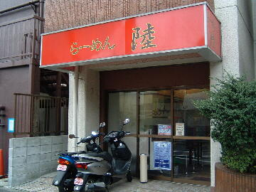
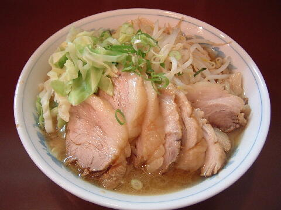
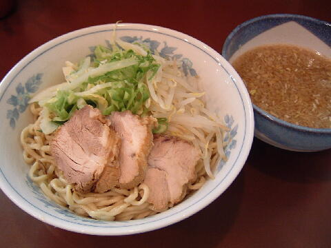
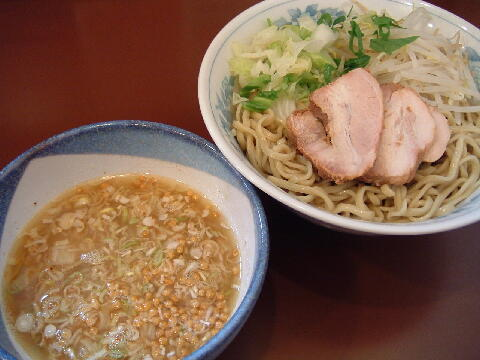

世田谷区 桜 3-8-14
木
11：30〜14：30 18：30〜22：00

店員は、仲良くバイク通勤してると思われるご夫婦。
にんにく、コショウ、一味唐辛子、醤油ダレ。
レンゲ有、紙ナプキン。
BGMは、ラジオ。
トッピングは、野菜、脂、味の多め少なめを食券を渡す時に告げる。
「ラーメン 陸」でヤフー検索
「ラーメン 陸」でヤフーリアルタイム検索
「ラーメン 陸」でグーグル検索

豚増しらーめん
麺は、細かなウェーブがかかった縮れ麺。濃厚なスープがよく絡む。
ぶたは、脂分がありに柔らかく美味い。豚増しで７、８枚。
スープは、豚骨が強いタイプ。醤油の強さは少ない。量も少なめ。
ヤサイは、キャベツ1に対しモヤシ1.618。いわゆる黄金比。
モヤシとキャベツは二郎のように混ざってはおらず、別々に盛られる。
これに青ネギがかけられる（現在は無）。
ニンニクは、中粒の刻み生にんにくをお好みに応じてご自分で。

つけめん
トッピングはラーメンと同じ。
つけ汁はユズ風味。細切れのネギがかかる。微量の辛味と酸味。
麺の丼には、豚、野菜に青ネギ（現在は無）がかかる。あつもりも可。

塩つけめん
麺の丼はつけめんと同じ。
つけダレは酸味のある濃い目の塩味。
これにあられと少々の唐辛子が加えられる。
ＰＣ店